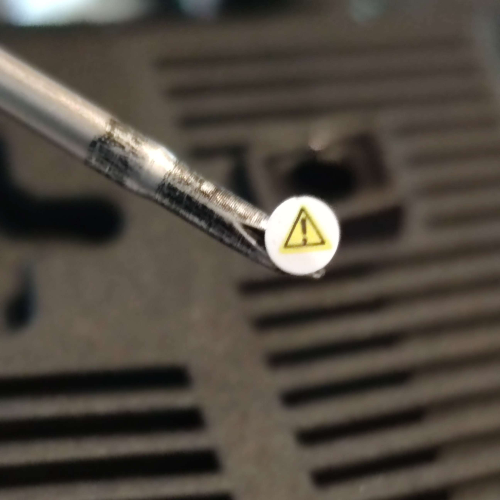
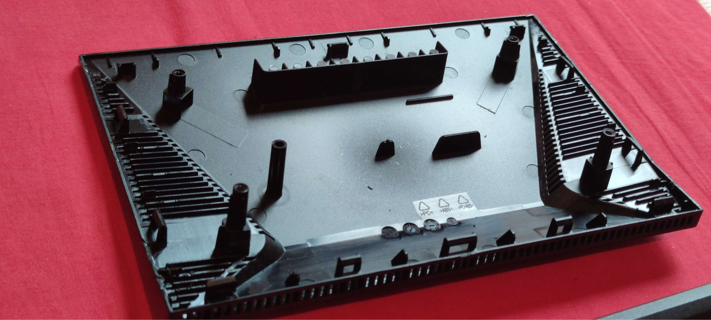
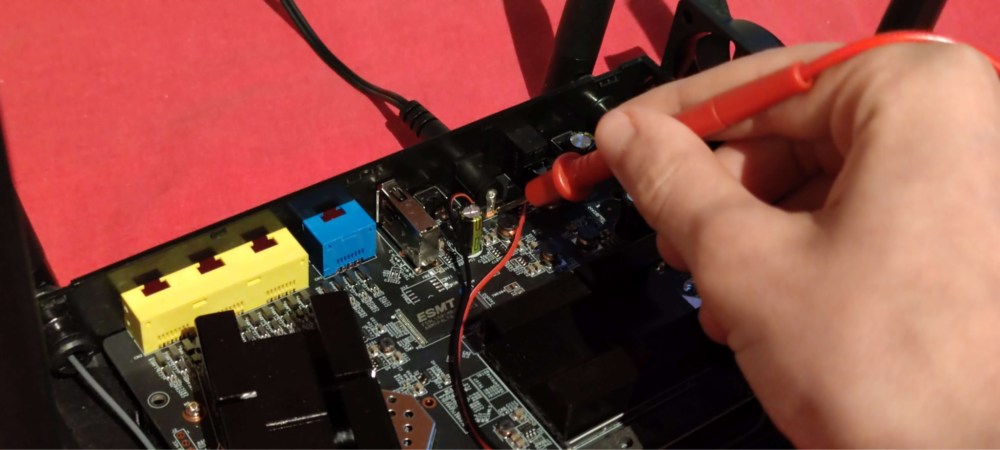
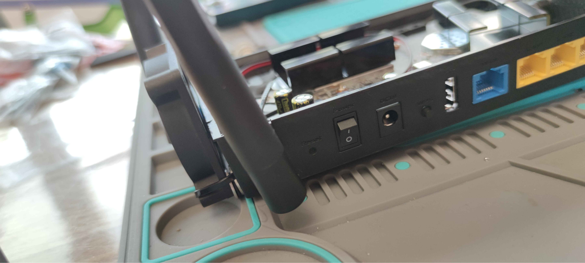
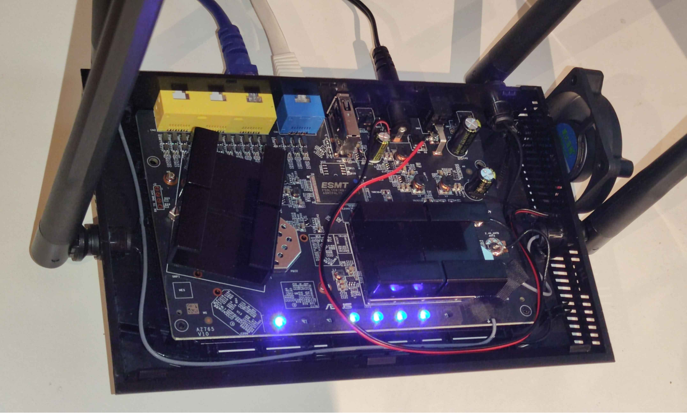

Het probleem
Soms koop je hardware voor op een manier te gebruiken waar het niet echt voor gemaakt is.
Ik had speciaal een secundaire router gekocht om beelden te streamen naar mijn VR-headset. Niet zomaar voor wifi in huis, maar specifiek voor stabiele, lage latency streaming. In het begin werkte dat perfect.
Tot na ongeveer dertig minuten.
Dan begonnen er rare problemen op te duiken. Niet echt “lag”, maar eerder alsof een YouTube-video constant even moest bufferen. Het beeld werd plots blurry en gepixeld, om daarna terug normaal te worden. Eerst dacht ik dat ik misschien te ver van de router zat, of dat iets het signaal verstoorde.
Maar DAN voelde ik de router. Dat ding was heel heet. Dus probeerde ik iets domsimpels: een ventilator erop laten blazen. En plots werkte alles weer perfect. Dus ja… de router was gewoon aan het overhitten.
Voor een lange tijd gebruikte ik hem letterlijk met een aparte ventilator die er elke keer naar keek zodat hij niet oververhitte. Super professionele oplossing natuurlijk.
Maar dit weekend besloot ik eindelijk iets leukers te doen.
Het begin van mijn router-mod
Dat betekende dus: warranty voiden, de router open schroeven en met een multimeter op een vreemde PCB beginnen meten.

Alleen… voor ik eraan kon meten, moest ik het ding nog open krijgen.
En blijkbaar had de ontwerper van deze router persoonlijke haat tegenover iedereen met nieuwsgierigheid.
Er zaten TWAALF interne klemmen in.

Elke keer als ik met een platte schroevendraaier één klem open wrikte en de tool eruit haalde, klikte die gewoon direct terug dicht door de druk van de andere honderd klemmen. Uiteindelijk moest ik vier metalen openingtools tegelijk gebruiken om het ding open te houden.
Zelfs dan ging het nog met moeite.
Na veel gevecht met het plastic object en lichte schade aan de behuizing, was de router eindelijk open.

Eenmaal binnen wist ik eigenlijk direct waar ik de stroom van kon halen. De PCB had een DC-connector waar 2 terminals verbonden waren, met daarover ongeveer 12 volt. Ik moest gewoon meten met de multimeter om zeker de juiste polariteit te hebben.
Maar ik wou natuurlijk niet dat de ventilator altijd draaide. Ik wou dat de fan alleen aanging wanneer de router aan stond.
Dus het plan werd:
- GND van de fan aansluiten op de GND van de DC-input
- VCC van de fan aansluiten op de switch
Voor ik iets soldeerde, begon ik eerst alles te meten. Het eerste wat ik controleerde was de spanning van de DC-input:
- Router uit: ~12.2V
- Router aan, geen belasting: ~11.9V
- Router aan met internet en twee apparaten verbonden: ~11.9V
- Router onder zware VR-streaming belasting: ~11.9V
De spanning bleef dus extreem stabiel.

Het enige dat echt veranderde, was de temperatuur van de heatsink. En dat verschil was heel duidelijk. Dus concludeerde ik dat de voeding totaal niet dicht bij zijn limiet zat. De power supply kon 1.5A leveren, dus stroom genoeg.
Daarna testte ik ook de brushless fan zelf. Met een multimeter ertussen en wat hulp van mijn broer’s extra paar handen meten ik ongeveer 120mA bij het opstarten, waarna die stabiliseerde rond ~95mA. Dus ja, mijn idee was perfect haalbaar.
Tijdens het testen ontdekte ik nog iets vreemds. Over de GND en de switch stond ongeveer 2V wanneer de router uit was. Dat maakte me even verward. Maar ik concludeerde wel vrij snel dat het waarschijnlijk gewoon restspanning in een condensator was. Voor de motor maakte dat niets uit: de ventilator zou gewoon niet draaien en niets zou beschadigd worden.
Dat was dag één.
Eigenlijk was ik er niet eens zo lang mee bezig, omdat ik die dag nog andere plannen had. Als je ervaring hebt met hardware en ook iets gelijkaardigs zou proberen, zou dit project zeker zelfs op 1 dag afgewerkt kunnen zijn.
Router mod montage
Dag twee begon met het monteren van de fan. Ik bevestigde hem aan de buitenkant van de router met zip-ties, vlak naast de ventilatiegaten die oorspronkelijk bedoeld waren voor passive cooling. Daarna duwde ik de twee kabels via de vent-openingen naar binnen.

Dan kwam het solderen. De twee grote aansluitpunten waren gelukkig vrij gemakkelijk, maar de draad aan de switch was iets minder leuk. Die zat half onder een ander metaal stuk en het oppervlak warmde moeilijk op, waardoor de draad niet goed wou blijven vastzitten. Maar uiteindelijk lukte het.

En toen kwam het beste moment van het hele project. Ik flikte de switch aan…
…en de fan begon direct te draaien.
Ik was eerlijk gezegd extatisch. Mijn eerste echte hardware mod, en het werkte gewoon perfect. Na het testen met belasting, werkte het perfect. Gewoon een klein beetje luchtstroom door de behuizing maakte al een gigantisch verschil.
En eigenlijk is dat logisch. De router ging van puur warmte uitstralen… naar effectief warmte wegblazen.
Wat ik het leukste vind aan dit soort projecten, is dat je niet gewoon iets repareert. Je begrijpt ook beter hoe hardware echt werkt. En dat gevoel wanneer een idee dat volledig in je hoofd begon uiteindelijk echt werkt? Dat is moeilijk te overtreffen.
